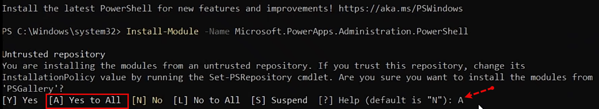

Validate Role, LIcense, Capacity:- Visit M365 Admin Center for Role and License
- Visit Capacity report in PPAC
Deploy:- Open Powershell in Admin mode
- Identify Azure Region viia "Get-AdminPowerAppEnvironmentLocations" in PowerShell
- Construct JSON
- DevToolsEnabled = False(Mark True if ceating Developer environment)
- DemoDateEnabled = False(Mark True if need Demo data)
- Templates = D365_FinOps_Finance / D365_FinOps_SCM / D365_FinOps_ProjOps
- DomainName = For unique Environment Name(DisplayName don't guarantee env URL)
- Locationname = Run "Get-AdminPowerAppEnvironmentLocations" to identify location names such as "unitedstates"
- Always deplo on latest Service & Quality Update
Tutorial: Provision a new environment with an ERP-based template
First install the PowerShell module
> Install-Module -Name Microsoft.PowerApps.Administration.PowerShell

> Write-Host "Creating a session against the Power Platform API"
With the next command we add the admin account which will be used to deploy the environment.
This account should have product license as well as one of the following roles:- Dynamics 365 Administrator
- PowerPlatform Administrator
> Add-PowerAppsAccount -Endpoint prod

Now define the JSON-Object
#To construct the json object to pass in
> $jsonObject= @"
{
"PostProvisioningPackages":
[
{
"applicationUniqueName": "msdyn_FinanceAndOperationsProvisioningAppAnchor",
"parameters": "DevToolsEnabled=true|DemoDataEnabled=true"
}
]
}
"@ | ConvertFrom-Json

Now you can kick off new environment Provisionment. this will take around 40 to 50 minutes to deploy
# IMPORTANT - This has to be a single line, after the copy & paste the command
> New-AdminPowerAppEnvironment -DisplayName "ODOP-UnoDev" -EnvironmentSku Sandbox -Templates "D365_FinOps_Finance" -TemplateMetadata $jsonObject -LocationName "Canada" -ProvisionDatabase

complete Code:
#Install the module
Install-Module -Name Microsoft.PowerApps.Administration.PowerShell
Write-Host "Creating a session against the Power Platform API"
Add-PowerAppsAccount -Endpoint prod
#To construct the json object to pass in
$jsonObject= @"
{
"PostProvisioningPackages":
[
{
"applicationUniqueName": "msdyn_FinanceAndOperationsProvisioningAppAnchor",
"parameters": "DevToolsEnabled=true|DemoDataEnabled=true"
}
]
}
"@ | ConvertFrom-Json
# To kick off new environment Provisionment
# IMPORTANT - This has to be a single line, after the copy & paste the command
New-AdminPowerAppEnvironment -DisplayName "MyUniqueNameHere" -EnvironmentSku Sandbox -Templates "D365_FinOps_Finance" -TemplateMetadata $jsonObject -LocationName "Canada" -ProvisionDatabase